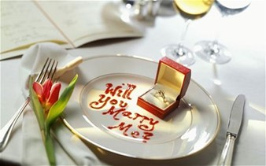
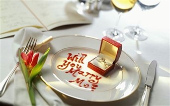

We met at school
In 2016, I was 16 years old, had just finished
10th gradea few days prior to the graduation
event that was being held on the school grounds.
That night was by far the best night of my life,
cause that's when I saw the man of my dreams waiting
in the doorway to the hall. Already drenched in punch
and frantically cleaning himself off, I knew from
the that point he would be the one.
We Went To Univeristy Together
A few years pass, after we both graduated high school
together, we both immediately began enrolling in
universities we both found suitable. Fortunately for the
both of us we got into the same university, but two
completely different fields… obviously. I went into
Databases, and he went into Electrical Engineering.
Date At The Lake
Our first trip together was by far the best we’ve had.
It was the time we both decided to go to a log cabin near
a freshwater lake up in the mountains after our first year
of university. Things got exciting once we were out the car,
we ran and jumped alongside the lake side all while the
sunset between the hills in the distance began to set.
Morning Coffee's
Once a week between all the assignments and projects, we
would always take one day out of our schedules and go for
either morning or afternoon coffees. We used this time to
catch up with each other, and it made us grow more founder
for one another.
Late Night Dinners
Having dinner together was very rare in our case, because
we would both either be busy at the same time, or the one
is busy while the other wasn’t. Though when we did have the
opportunity to dine together, it was late into the night but
THAT made it all the more special.
Traveled To Germany
For our second-year graduation celebration, we somehow made the
money throughout the year to go overseas. We both wanted to go
somewhere different, he wanted to go to the US and I wanted to go
to Italy, but we put our differences aside and decided to go to
his home town from when he was a kid which was situated in
Germany, Rothenburg.
Christmas Festival on Vacation
Luckily, we picked the most opportune moment to go to Germany. We
had arrived there the day before Christmas, and we saw all the
towns folk setting up for their annual Christmas Festival while
walking the streets. However, it was nothing compared to what we
saw on the night of Christmas… all the colourful lights lit up
the entire centre of the town where they had set up massive
Christmas tree. Out of all those amazing sights nothing came
close to when he gave me my promise ring that night.
Spend Lots Of Time Together
All throughout our third and fourth year, we became busier than
ever… it was hard seeing each other for an extended amount of time.
It could’ve been from just 15 minutes to a little over an hour a
day, but we spent that time together as if it were our last.
The Big Night!
After we both finally got our degrees, we moved in with each other
not long after. A half a year later, he randomly asks to go out for
dinner at this fancy restaurant, I thought nothing of it at the
time other than it was a nice place that made remarkably good food.
It was only until later in the evening, when the plates were being
cleaned and most of the venue was empty, when I saw him get down
on one knee and said those 3 magical words.
I Said YEEESSS!!
The day after he proposed, I couldn’t hold my excitement, I had to
tell everyone about my lovely evening, and he had asked. I had let
all the people closest to me know that I had said yes milliseconds
after he had asked.My heart raced every time I had to tell the
story to different people.
Planning Our Dream Wedding
Now we are planning what seems to be the best day of our lives and
we are even happier than ever, I can’t wait to start this amazing
life journey with the person I love so whole heartedly.


 
